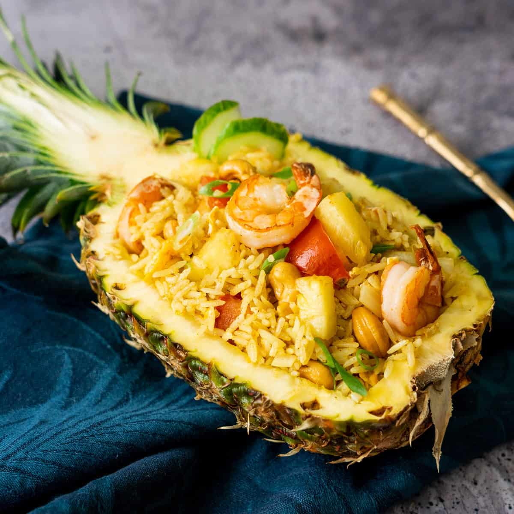

Pineapple Friedrice - combines the sweetness of ripe pineapple with savory fried rice

Ingrediants
- 2 cups cooked jasmine rice (preferably chilled or day-old rice)
- 1 cup diced pineapple
- 1/2 cup cooked and diced shrimp
- 2-3 cloves garlic
- 2 tablespoons vegetable oil
- 1/4 cup roasted cashew nuts
- 1 tablespoon oyster sauce
- 1 tablespoon curry powder
- 2 green onions
- fresh cilantro for garnish
Preperation
- Sauté garlic, protein, and mixed vegetables in oil.
- Add pineapple and curry powder, stirring together.
- Mix in chilled rice, soy sauce, and oyster sauce.
- add roasted cashew nuts.
- Garnish with green onions and cilantro